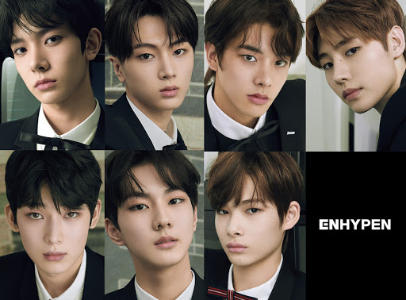
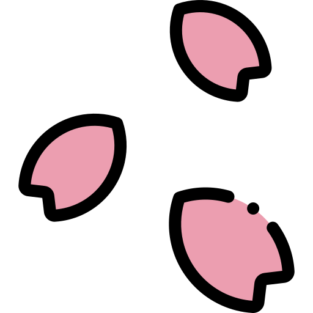
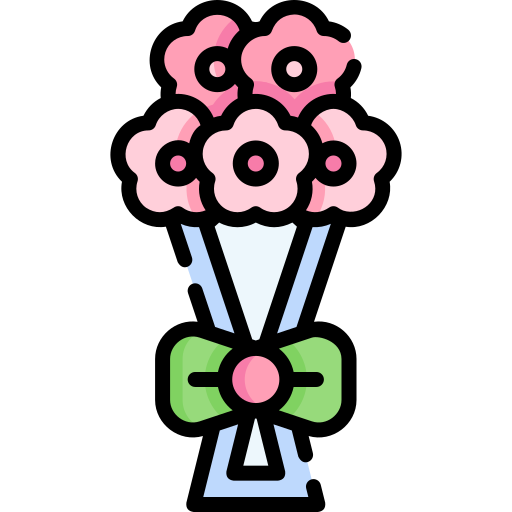

Me gusta leer manhwas, (Manhwa es el término general coreano utilizado para denominar las tiras cómicas e historietas. Fuera de Corea del Sur, el término se refiere exclusivamente a las tiras cómicas surcoreanas), en especial el genero BL
. Mi primer manhwa fue "Here u are" y desde entonces seguí leyendo manwhas, me parece que tienen una muy buena calidad de dibujo y las historias siempre son fascinantes.
Ver K-dramas
Me gusta ver K-dramas(Se refieren a las series de televisión dramáticas provenientes de Corea del Sur), son geniales, mi primer k-drama fue escalera al cielo, me gustan en especial aquellos que son del genero policial y de suspenso. Pienso que simpre tienen un buen guión y actores increíbles que hacen que la historia siempre te mantenga a la expectativa. El año pasado se emitió uno de los k-dramas que más me han gustado: "Flower of evil", la historía simplemente fue magnifica y un tanto diferente, además de que uno de mis actores favoritos lo protagonizó, el siempre perfecto Lee Joon-gi. 
Stanear grupos de K-pop
Es una de las cosas que más amo, seguir grupos de k-pop y darles apoyo constantemente como una fan me hace sentir bien, disfrutar de la música y presentaciones de mis grupos favoritos a la vez que veo como crecen es genial. El primer grupo que me gustó fu SS501 y fué después de escuchar uno de los ost que habían hecho en un K-drama(Boys over flowers) que los conocí. Después empece a stanear a BTS, su música y mensaje me atraparon por completo y espero poder seguir escuchando su música durante mucho tiempo más. Justo ahora me gusta un grupo que debutó apenas el año pasado: "Enhypen" y que he seguido desde antes que el grupo definitivo se formara, pienso que tienen mucho talento y son chicos con personalidades por completo brillantes.
Leer libros
Amo leer, en especial novelas de Hermann Hesse quién es mi autor favorito, he leído todas sus obras. Cada libro se siente como si contuviera una pieza de él, es como si el autor hubiera puesto su alma en sus obras, conforme lees te vas dando cuenta de que no estas leyendo solo la obra de alguien más sino que incluso podrías estar leyendo tu vida o momentos de ella, Sus protagonistas te llenan de empatía aunque no sepas la razón concreta de ello, quizá sea porque sus historias cuentan la vida de "hombres reales" y la cotidianidad pero a la vez la complejidad que resulta del solo vivir, o quizá que la narrativa gire en torno a los pensamientos y el entorno que rodea al protagonista dejando una cierta lejanía con los demás personajes, manteniendo ese misterio en cada uno de ellos pues al igual que en la vida desconocemos y nos parece distante la gente que nos rodea, puedes sentir la soledad, cierta melancolía y confusión en los pensamientos de cualquiera de sus protagonistas y aún conociendo todo sobre ellos sentirlos desconocidos y distantes y nunca saber que pasara a continuación con ellos, solo deseando que puedan encontrar el propósito o aquello que pareciera nunca ser mencionado en sus libros: felicidad.

